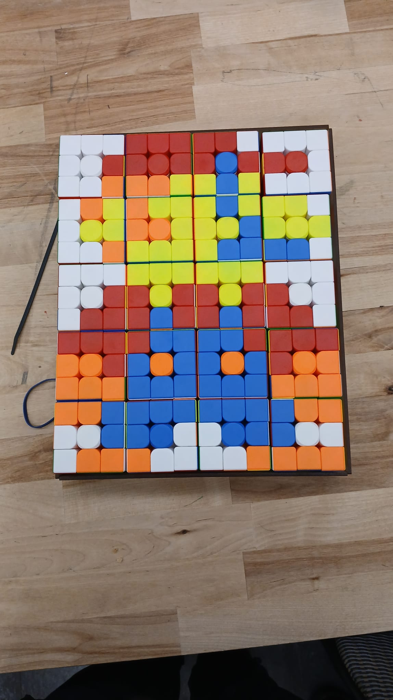
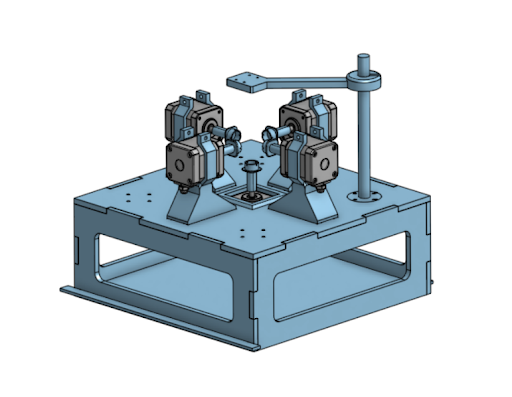
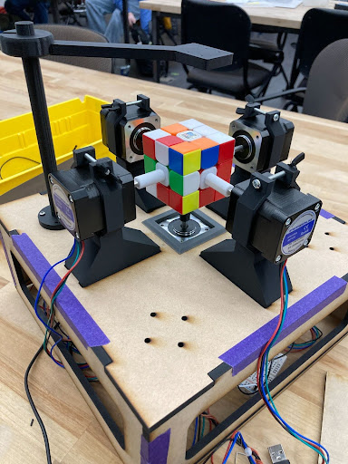
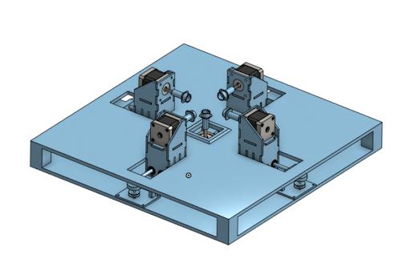
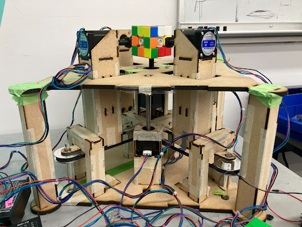
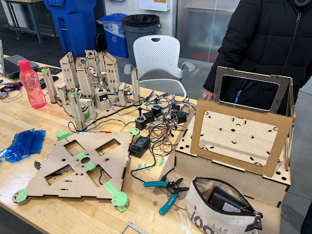
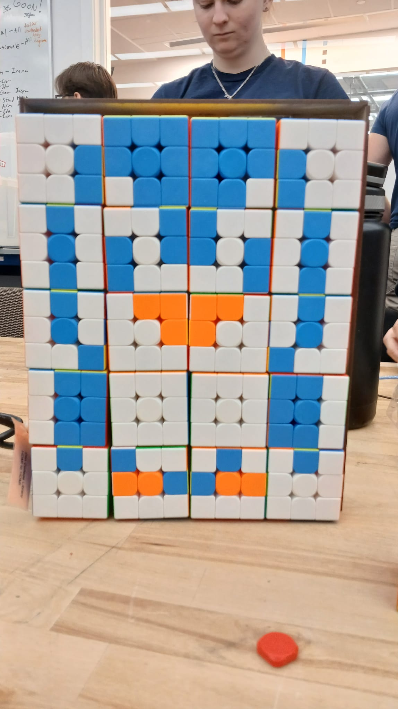
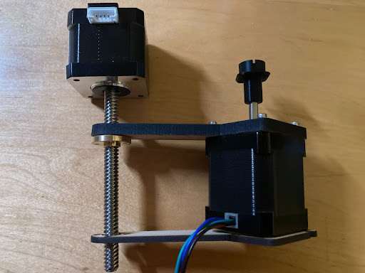
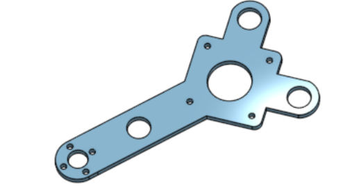
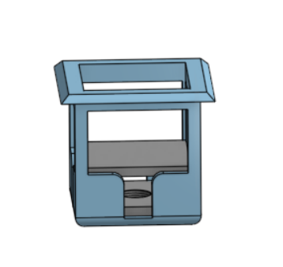

General Overview
The mechanical portion of this project concerned how the motors are mounted/positioned in a way that can solve certain configurations of the cube given an image and how we can present the cube to the user in a specific configuration. We utilize five NEMA17 motors to physically turn the cube. Mounted on the shafts of the Nemas are 3D-printed pieces that allow these five motors – mounted on 4 sides + the relative bottom – to turn the cube. Throughout our machine, we utilize lasercut ¼ inch acrylic to create the basis/foundation for the sliding mechanism and the general housing of our entire machine. We utilized a collection of different colored acrylic to make our casing aesthetically pleasing and functional. The motor mounts slide along acrylic rods to move the motors in and out of clamping the cube. These moving motor mounts allowed the motors to detach from the cube, allowing us to place the cubes manually in the frame.
Mechanical Development Cycle
In this phase, our main concern was developing the solver mechanism. We prototyped a general basis for the Rubik's cube solving using ¼ inch MDF, 3D-printed motor mounts, and tape. Given a mechanical chassis, electrical and software testing could progress.



Given the general basis was for software and electrical testing, these phases instead focused on mechanical prototyping, testing many designs for proof of concept.



With proof of concept for our mechanisms like the belt and pulley system, we were capable of final prototyping and assembly. This concerned cutting the final acrylic and assembling the final machine for solving the Rubik's cube.

Mechanical Details
Lead Screw Elevator
In order to detach from the cube, motor mounts detach from the sides of the cube, and a lead screw elevator slowly brings the Rubik's cube down to place the cube flat on the face of the structure. This lead screw implementation allows the user to easily grab the cube without manually detaching any connections between the machine and the cube.
Timed Belt + Pulley System
In order to move the motor mounts suspended on acrylic rods, we utilize a belt and pulley system that drives paired motor mounts towards and away from the cube.
Design Process / Trade-offs (Mechanical)
Original Motor Mounts vs. Movable Mounts
Our original motor mount design was stationary and adjustable via screws. While this allowed easy cube insertion, it required manual operation. We redesigned the mounts so that all motors remain stationary relative to the mounts, and the entire mount can move in/out using a pulley system for full automation.
Bevel Gear + Lead Screw vs. Pulley
We originally had planned to use a bevel gear system with lead screws to move the motor mounts in and out thinking that would offer precise and controlled motion. However, through prototyping, we came to realize that the lead screw implementation created too much friction to offer a smooth controlled motion and more importantly, took up a significant amount of vertical space in the bottom center of the box, needed by the motor which controls the bottom face of the cube. Since the motor needs room to move up and down, the lead screw implementation would interfere with its motion and also would constrain the overall layout. Ultimately, we decided to pivot to a pulley based system which was much more compact, had no interference with the path of movement for the bottom motor, and was much simpler to implement.
Motor-to-Cube Attachment
Early in the design process, we debated between two different motor to cube attachments: one that inserts directly in the center of the cube face and another that wraps around each face of the cube. While the face gripping attachment seemed appealing, as it wouldn’t require any alteration to the cubes, it required the motors to move out of the way with each rotation to allow for adjacent faces to be able to be turned. This complicated the motion planning algorithm and also introduced issues with the faces jamming during testing due to misalignment. In the end, we went with the center-insert attachment as it allowed rotation of each face without having to retract motors, simplified the algorithm, and was more reliable. However, this design decision did come with the tradeoff that we would have to remove the center pieces of each cube.

Lead Screw Motor Attachment
When designing the mechanism to move the bottom face motor up and down, we explored several lead screw mounting configurations. We debated between mounting the lead screw directly under the motor, so it could push a stage where the motor was mounted up and down, mounting the lead screw motor upside down from the top face of the box, and mounting it along the side of the motor in the bottom housing. After CADing the various options and, we ultimately chose the side-mounted lead screw motor because it minimized the overall height of the system while still providing stable, controlled vertical motion. Mounting the lead screw at the top would have required the motor to be held upside down which would have compromised stability and having it directly below would have interfered with the pulley system. Mounting from the side was the best approach, though it did require a few additional components to help maintain stability since it was being held from one side.



Additional Mechanical Documentation
- Bevel gear system prototype
- Rack-and-pinion mechanism
- Alternative elevator concepts
- Ramp-based cube insertion designs